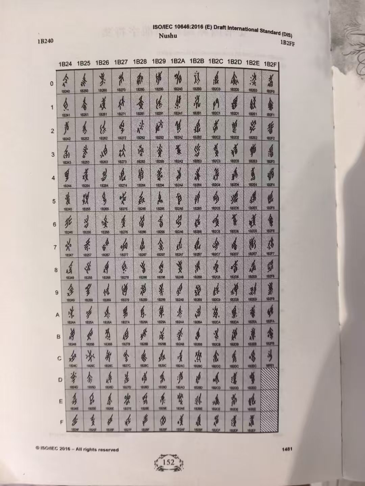

照片资料 · 原图与文字整理
历史字表 · 2016 年草案页
一页标有 ISO/IEC 10646:2016 (E) DIS 的 Nushu 字表照片，可与现行字库对照阅读。


文字整理仅覆盖可辨识内容，局部细节请以原图为准。
文字整理与阅读说明
照片可辨识信息
页眉为“ISO/IEC 10646:2016 (E) Draft International Standard (DIS)”，文字名称为“Nushu”。照片所示页范围标为1B240至1B2FF，底部可见印刷页码1481。
表格按十六进制排列：列头1B24至1B2F、行头0至F。读表时将列头与行头拼合，例如1B24列与0行对应1B240。这些编号用于定位字形，不是汉字释义。
版本提示
页眉明确标注“Draft International Standard (DIS)”，因此这里归为历史草案字表照片。它不是完整的女书字表，也不能替代现行标准中的分配记录。照片右下角有斜线填充的格位，不能把整块表格的位置数量都当作已编码字符数量。
本页现行字形库依 Unicode 17.0.0 数据整理：女书区段为U+1B170–U+1B2FF，已编码字符为396个（至U+1B2FB）。可打开关联的U+1B240记录，比较同一编号在历史照片与内嵌字体中的呈现；不同版本字形不在此逐字判同。